- Visa kelionė po Kopenhagą patogiai įveikiama pėsčiomis ir metro -- automobilio nuomoti nereikia, tad pasiimkite patogius batus.
- Iš oro uosto į Christianshavn greičiausia ir paprasčiausia -- metro M2 linija, apie 15 min.
- Kelias nuo Rundetaarn iki apartamentų eina per senamiesčio pėsčiųjų zoną (Strøget/Kultorvet) -- jauki, saugi gatvė be automobilių eismo.
- Po Deep Purple koncerto Royal Arenoje grįžtant patogiau eiti link Vestamager stoties, ne Ørestad -- ten paprastai mažesnė žmonių spūstis.
- 3-ią kelionės dieną naktį keičiasi laikas į žiemos laiką -- naktis bus viena valanda ilgesnė, bet verta tai atsiminti planuojant kitos dienos rytą.
- Paskutinę dieną į oro uostą atvykstama apie 3 val. iki skrydžio -- registracijai, bagažo pridavimui ir pietums laiko tikrai pakanka.
🏠 Nakvynė
Canal View (Apartment Canal View)
Overgaden Oven Vandet 2, st., Christianshavn, 1415 Kopenhaga, Danija
Keliautojo užsakytas butas tiesiai prie kanalo Christianshavn rajone – 2 miegamieji, 1 vonios kambarys, tinka 4 žmonėms. Pilnai įrengta virtuvė (indaplovė, orkaitė) ir skalbimo mašina, pusryčiai nėra įskaičiuoti. Apie 3 min pėsčiomis iki Christianshavn metro stotelės (M1/M2 linija), ~15 min pėsčiomis iki Nyhavn/Strøget.
Kaina: 780 € už visą apsilankymą (3 naktys, 4 keliautojai)
Booking.comŠiam būstui nuotraukų nėra – aktualias nuotraukas žr. savo booking.com užsakymo lapyje.
1 diena – Atvykimas: Nyhavn, Amalienborg ir Rosenborg
🧭 Dienos maršrutas Google Maps


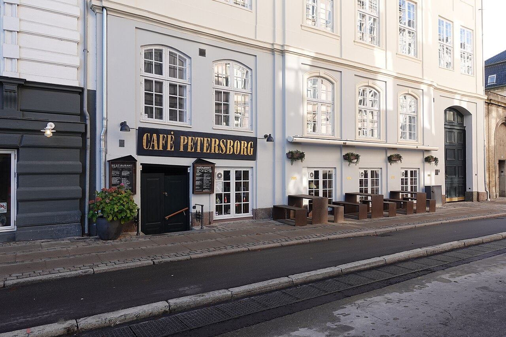


🌧 Planas B (jei blogas oras)
Kodėl: Nyhavn kanalo pakrantė ir atvira Amalienborg pilies aikštė su sargybos keitimu yra lauko erdvės – lietuje ir vėjyje jose nepatogu stovėti ilgiau. Taip pat nukenčia pasivaikščiojimas Rosenborgo sodo parke (Kongens Have).
Lietaus diena: muziejai ir bažnyčia vietoje lauko pasivaikščiojimų
Bendras persikėlimų laikas: apie 35 min. Diena baigiasi toje pačioje vietoje kaip ir pagrindiniame plane.
🧭 1B dienos maršrutas Google MapsPatarimas: Amalienborg muziejus uždarytas pirmadieniais (2026-10-23 yra penktadienis, tad veiks); Marmorkirken (Frederikskirke) penktadieniais dažnai atidaroma tik nuo 12:00, todėl apsilankymas sudėliotas po pietų ribos.
2 diena – Christianshavn, muziejai ir Tivoli Helovinas
🧭 Dienos maršrutas Google Maps


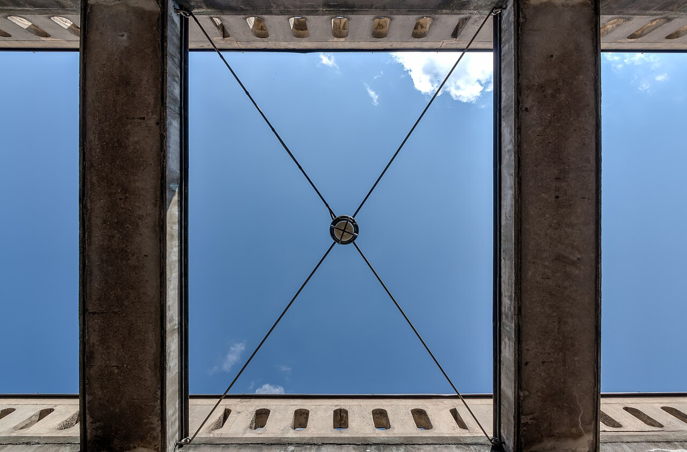
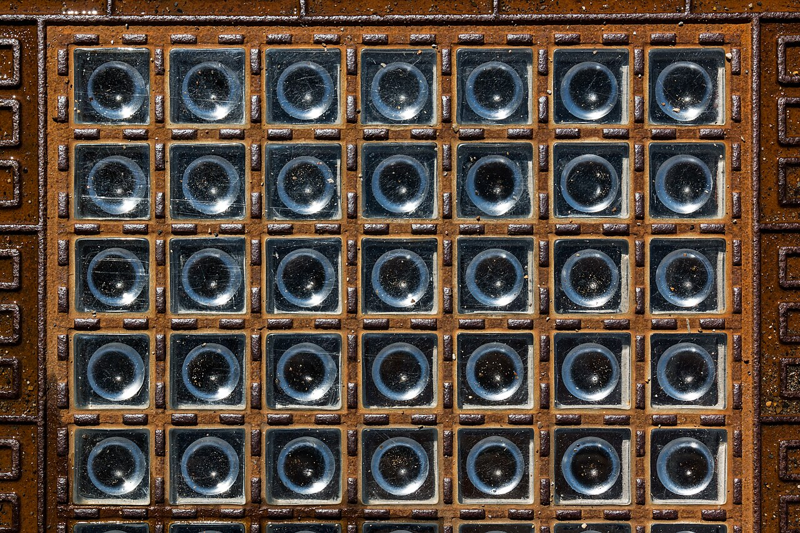

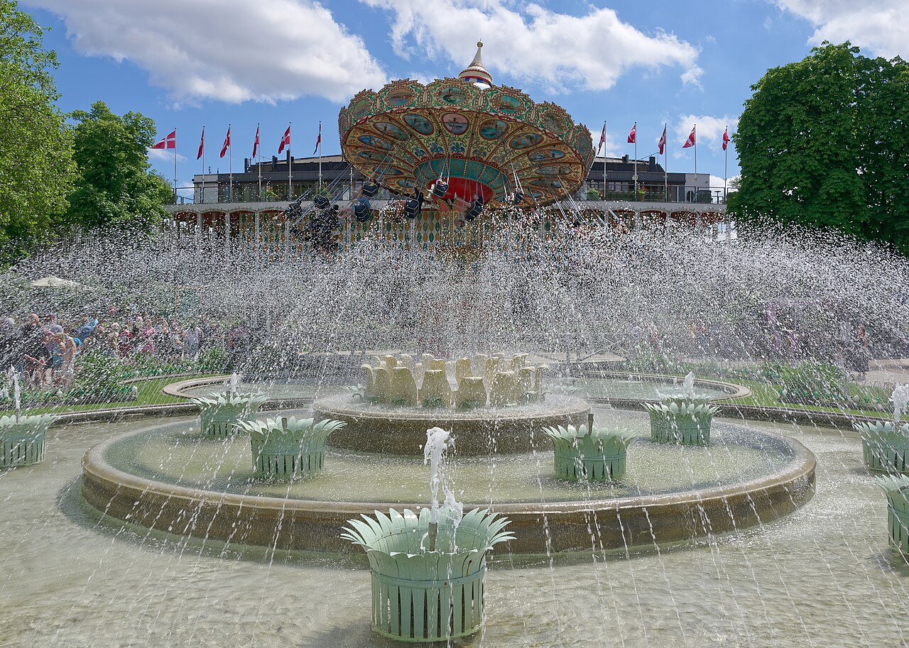
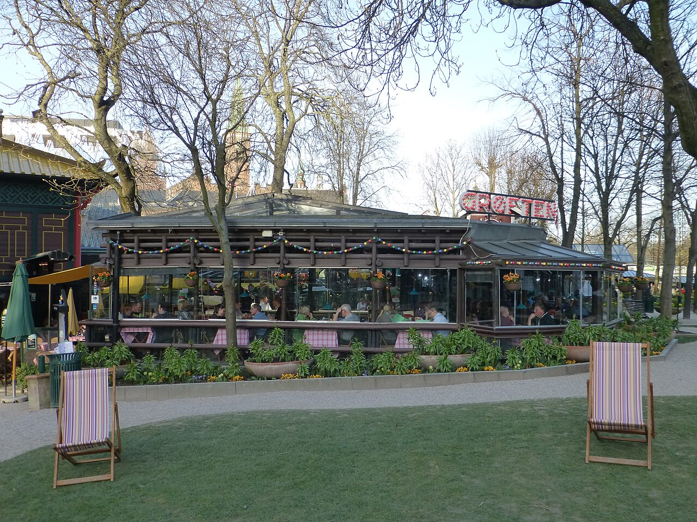
🌧 Planas B (jei blogas oras)
Kodėl: Laisvosios Kristianijos pasivaikščiojimas lauke, Vor Frelsers Kirke bokšto lipimas išoriniais laiptais (uždaromas per lietų ir vėją) ir Tivoli parko lauko Helovino pasivaikščiojimas smarkiai nukenčia nuo blogo oro.
Lietaus diena: galerijos vietoje bokšto lipimo ir Tivoli lauko dalies
Bendras persikėlimų laikas: apie 20 min. Diena baigiasi toje pačioje vietoje kaip ir pagrindiniame plane.
🧭 2B dienos maršrutas Google MapsPatarimas: Statens Museum for Kunst (SMK) uždarytas pirmadieniais, šeštadienį (2026-10-24) veikia 10:00–18:00. Vor Frelsers Kirke vidus atidarytas tik nuo 11:00, todėl apsilankymas numatytas po šio laiko.
3 diena – Kanalai, dizainas ir Deep Purple koncertas
🧭 Dienos maršrutas Google Maps
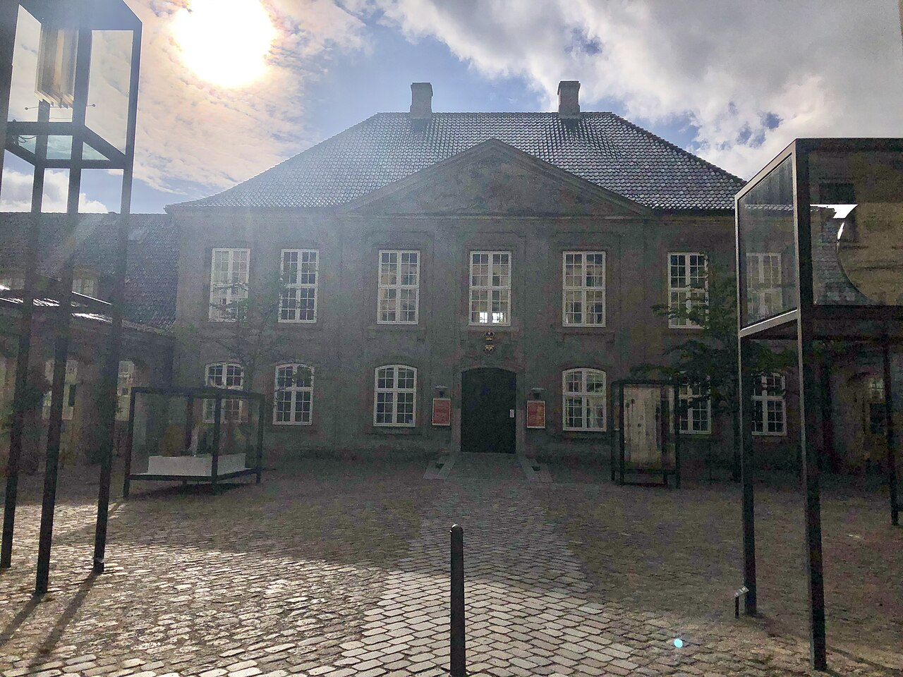
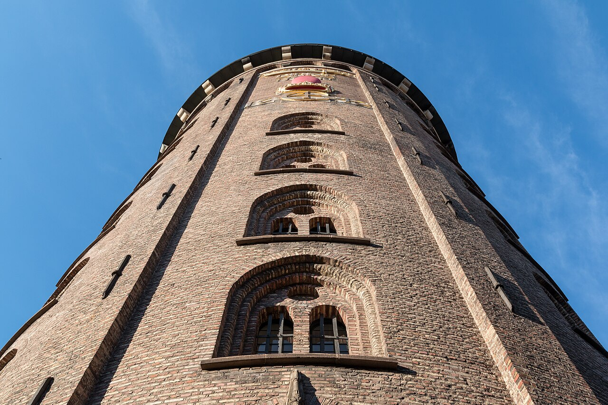
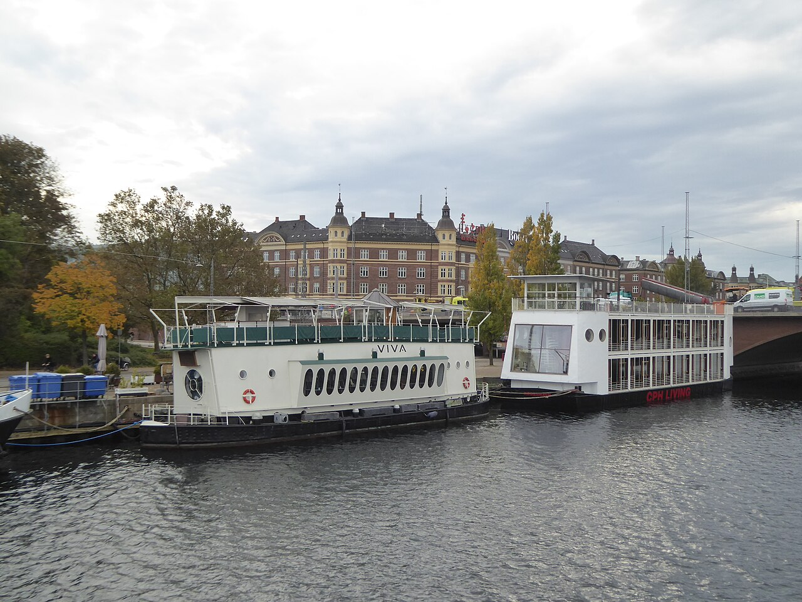

4 diena – Paskutinis rytas ir skrydis namo
🧭 Dienos maršrutas Google Maps
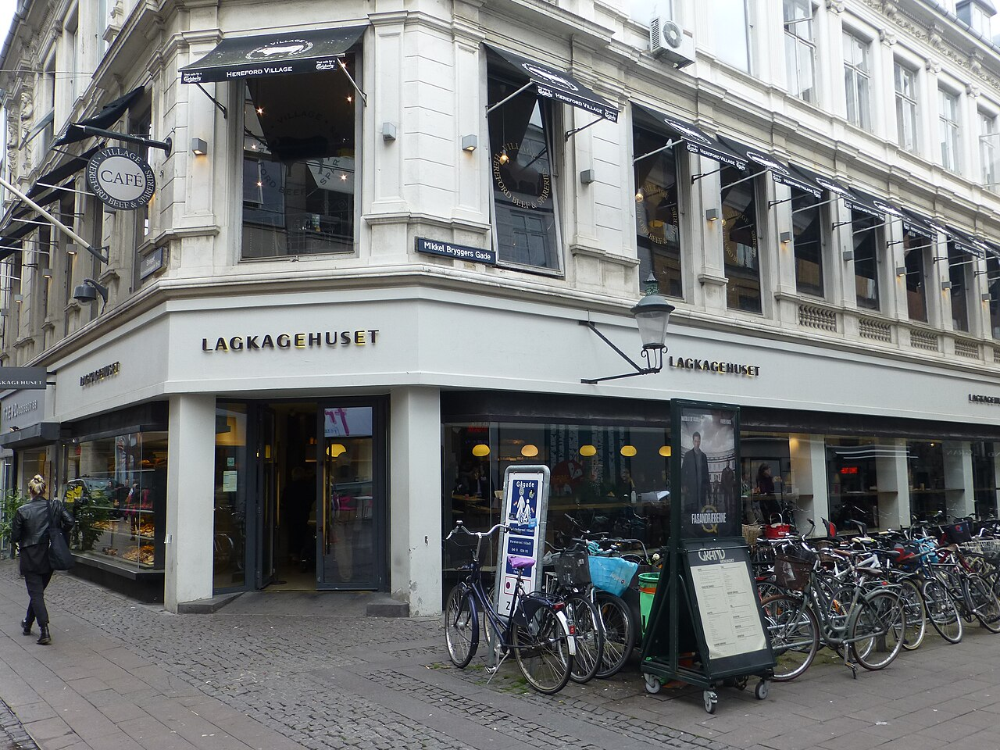
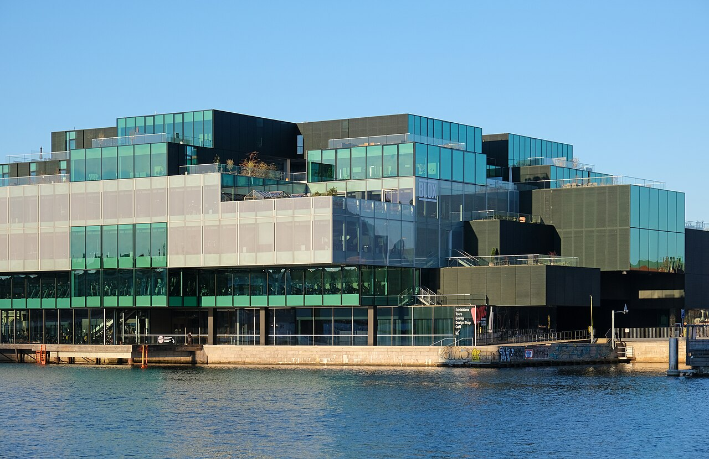

🗺️ Žemėlapis
💰 Biudžeto suvestinė (4 keliautojai)
| Kategorija | Min | Tikėtina | Maks. |
|---|---|---|---|
| Skrydžiai (KUN↔CPH, 4 asm.) | 472 € | 550 € | 750 € |
| Automobilio nuoma | 0 € | 0 € | 0 € |
| Nakvynė (Canal View apt., Christianshavn, 3 naktys, 4 asm.) | 780 € | 780 € | 780 € |
| Maistas maršruto užeigose (4 d. × 4 asm.) | 760 € | 980 € | 1 180 € |
| Įėjimai/bilietai (be koncerto) | 320 € | 430 € | 560 € |
| Vietinis transportas (metro/bus) | 100 € | 150 € | 240 € |
| Deep Purple koncerto bilietai (Royal Arena, 4 bilietai) | 260 € | 320 € | 2 000 € |
| Iš viso (4 asm.) | 2 692 € | 3 210 € | 5 510 € |
| Vienam asmeniui | ~673 € | ~803 € | ~1 378 € |
Automobilis nenuomojamas – viskas pasiekiama pėsčiomis ir metro, todėl automobilio ir kuro išlaidų nėra.
Nakvynės kaina (780 €) yra faktinė keliautojo booking.com užsakymo suma (Canal View apartamentai), ne įvertis.
⚠️ Skrydžio kaina paskaičiuota pagal faktinius 2026-10-23/26 datų pasiūlymus (~472 €/4 asm.) – jei jūsų bilietai jau pirkti kitokia kaina, orientuokitės į savo faktinę kainą.
⚠️ Deep Purple koncerto bilietus patariame pirkti iš anksto per oficialų platintoją (ticketmaster.dk/livenation.dk arba Royal Arena puslapį) – jei originalūs bilietai jau išparduoti, perpardavimo rinkoje (StubHub/Viagogo) kaina 4 bilietams gali pakilti iki ~2 000 €.
☁️ Orų prognozė
23-10 · Kopenhaga (Christianshavn)
Rūkas, 6.9–10.7°C
Lietaus tikimybė: 18% · Vėjas iki 17 km/h
24-10 · Kopenhaga (Christianshavn)
Debesuota, 9.3–12.9°C
Lietaus tikimybė: 20% · Vėjas iki 18,5 km/h
25-10 · Kopenhaga (Christianshavn)
Debesuota, 9.9–12.8°C
Lietaus tikimybė: 0% · Vėjas iki 25,2 km/h
26-10 · Grįžtama į Kauną
Kartais lyja, 8.3–11.3°C
Lietaus tikimybė: 40% · Vėjas iki 24 km/h
🎒 Ką pasiimti
- Skysčiai saloną – iki 100 ml talpoje, visi vieno asmens buteliukai į vieną skaidrų ≤1 l maišelį.
- Danijos ir Lietuvos elektros kištukai sutampa – papildomo adapterio nereikia.
- Rengtis sluoksniais: ryto rūkas ir vakaro vėsa (7–13°C) reiškia, kad lengva striukė virš megztinio tinka visoms dienoms.
- Koncerto dieną (X.25) verta turėti mažesnę rankinę – didelės kuprinės į arenas dažnai neįleidžiamos arba tikrinamos.
Drabužiai
Dokumentai ir pinigai
Praktiškumai
Higiena
🍴 Kur pavalgyti
1 diena
Café Petersborg – netoli Amalienborg pilies aikštės (pietų stotelė maršrute) · smørrebrød užeiga · ~24 €/asm.
Viena seniausių smørrebrød užeigų mieste (pavadinta buvusios Rusijos ambasados vardu), kelių žingsnių nuo Amalienborg – geras pasirinkimas klasikiniams danų sumuštiniams su silke ar kiauliena po sargybos keitimo. Žemėlapyje
Hallernes Smørrebrød (Torvehallerne) – netoli Torvehallerne maisto turgaus · turgaus prekystalis · ~16 €/asm.
Seniausias ir geriausiai vertinamas smørrebrød prekystalis turguje – silkė, roast beef ar krevetės ant ruginės, valgoma stoviniuojant prie bendro stalo be rezervacijos. Žemėlapyje
Christianshavns Færgecafé – netoli nakvynės Christianshavn (vakarienė) · danų taverna prie kanalo · ~28 €/asm.
Vietinių mylima, ne turistinė smørrebrød ir akvavito vieta senoviniame Christianshavn name prie kanalo, pora minučių nuo buto – labai aukšti įvertinimai (4.9/5 Restaurant Guru). Žemėlapyje
2 diena
Morgenstedet – netoli Laisvosios Kristianijos · vegetariška/vegan kavinė · ~14 €/asm.
Nuo 1980-ų veikianti savanorių valdoma kavinė pačioje Kristianijoje – ekologiška kasdien kintanti lėkštė, sriubos ir pyragai; atsiskaitymas tik grynais. Žemėlapyje
Slotskælderen hos Gitte Kik – netoli Christiansborg (pietų stotelė maršrute) · istorinė smørrebrød užeiga · ~26 €/asm.
Nuo 1910 m. veikianti rūsio užeiga prie Christiansborg – tikra vietinė klasika su senomis nuotraukomis ant sienų, labai populiari tarp kopenhagiečių, geriau rezervuoti. Žemėlapyje
Grøften – netoli Tivoli parko (vakarienė) · danų taverna (Tivoli) · ~40 €/asm.
Vienas seniausių Tivoli restoranų (nuo 1874 m.) su tradiciniais patiekalais kaip stegt flæsk – brangesnis nei vidutinė užeiga, bet dalis patirties sutemus tarp Helovino dekoracijų; kainos atsvarai žr. dešrainių vežimėlį netoliese. Žemėlapyje
Pølsevogn prie Tivoli/Rådhuspladsen – netoli Tivoli parko · dešrainių vežimėlis · ~8 €/asm.
Klasikinis danų gatvės maisto vežimėlis – greitas ir labai pigus užkandis, jei Grøften kainos atrodo per didelės; dešrainis su visais priedais yra UNESCO įtrauktas į Danijos nematerialaus kultūros paveldo sąrašą. Žemėlapyje
3 diena
Hallernes Smørrebrød (Torvehallerne) – netoli Torvehallerne maisto turgaus (pietų stotelė maršrute) · turgaus prekystalis · ~16 €/asm.
Antras apsilankymas turguje – šįkart pabandykite kitus prekystalius, pvz. Slagter Lund kepto kiaulienos sumuštinio ar frikadelių. Žemėlapyje
Restaurant Viva – netoli nakvynės Christianshavn (vakarienė prieš Deep Purple koncertą) · žuvies restoranas laive · ~38 €/asm.
Restoranas senoviniame laive prie Christianshavn kanalo – gerai įvertinta žuvies virtuvė (ypač omarų sriuba), patogu prieš koncertą, nes vieta arti buto. Žemėlapyje
4 diena
Lagkagehuset Christianshavn – netoli nakvynės Christianshavn (paskutinis rytas) · danų kepyklėlė · ~7 €/asm.
Populiariausia danų kepyklų tinklo parduotuvė, įsikūrusi čia pat Christianshavn – puikūs kanelsneglės ir sūrūs sumuštiniai kelionei, pigu. Žemėlapyje
Aamann's (Kopenhagos oro uostas) – prie išvykimo vartų, po saugumo patikros · smørrebrød/delikatesų užkandinė · ~20 €/asm.
Prie išvykimo vartų rekomenduojame Aamann's, kur galima paragauti tikro danų smørrebrød ir dešrainio prieš skrydį. Žemėlapyje
Barai
Hviids Vinstue – netoli Nyhavn / Kongens Nytorv (1 diena)
Seniausia Kopenhagos vyno/alaus užeiga, veikianti nuo 1723 m. – nepakitusi medinė vidaus apdaila ir šimtmečių atmosfera, lankyta net karališkosios šeimos narių. Žemėlapyje
Nimb Bar – netoli Tivoli parko (2 diena)
Baras įsikūręs maurų stiliaus Nimb rūmuose Tivoli vartų prie H.C. Andersens Boulevard – pats pastatas yra Kopenhagos simbolis, ypač efektingas švytintis vakare Helovino sezono metu. Žemėlapyje
🍽️ Ką paragauti

Smørrebrødas
Danijos virtuvės simbolis – plonai pjaustyta ruginė duona su įvairiais priedais: silke, roast beef'u, krevetėmis ar kepta kiauliena. Kiekvienas prekystalis turi savo specialybę.
12–30 €Kur paragauti: Café Petersborg, Christianshavns Færgecafé, Slotskælderen hos Gitte Kik, Hallernes Smørrebrød (Torvehallerne)

Kepta kiauliena su petražolių padažu
Danijos nacionalinis patiekalas – traškiai kepti kiaulienos skilandėliai su virtomis bulvėmis ir baltu petražolių padažu.
18–26 €Kur paragauti: Grøften, Christianshavns Færgecafé
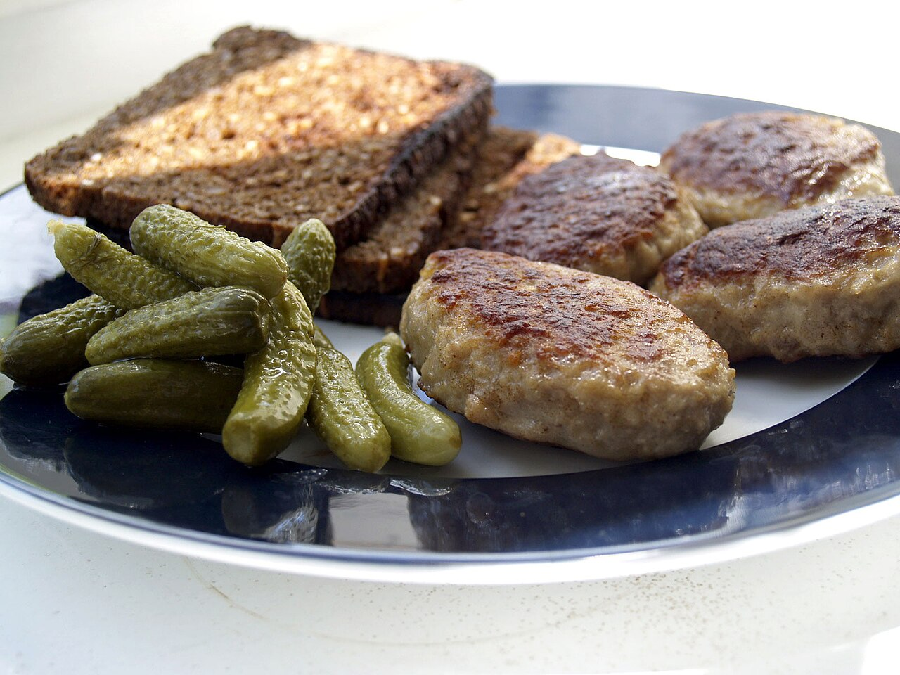
Danų kukuliai
Kiaulienos ir jautienos faršo kukuliai, kepami keptuvėje, patiekiami su virtomis bulvėmis, padažu ir raudonaisiais kopūstais arba ant ruginės duonos.
12–18 €Kur paragauti: Café Petersborg, Slotskælderen hos Gitte Kik

Raudonoji dešrelė
Gatvės maisto klasika iš garsiųjų dešrainių vežimėlių (pølsevogn) – dešrelė bandelėje su garstyčiomis, kečupu, svogūnais ir marinuotais agurkais.
5–8 €Kur paragauti: Pølsevogn prie Tivoli/Rådhuspladsen

Marinuota silkė
Marinuota silkė su garstyčių-medaus ar curry padažu ant ruginės duonos – tradicinis smørrebrød priedas, dažnai valgomas su akvavitu.
10–16 €Kur paragauti: Christianshavns Færgecafé, Café Petersborg

Danų sausainė su kanele
Minkšta mielinė bandelė su kanele ir cukraus glajumi – klasikinis danų kepyklos gaminys rytui ar užkandžiui kelyje.
3–6 €Kur paragauti: Lagkagehuset Christianshavn
ℹ️ Praktinė informacija
- ✈️ Skrydis į Kopenhagą
- FR6156 (Ryanair), KUN 09:10 → CPH 09:40, 2026-10-23
- ✈️ Skrydis namo
- FR6155 (Ryanair), CPH 15:15 → KUN 17:45, 2026-10-26
- 🚗 Automobilis
- Nenuomojamas – visa kelionė pėsčiomis ir metro
- 🏠 Nakvynė
- Canal View (Apartment Canal View), Overgaden Oven Vandet 2, st., Christianshavn, 1415 Kopenhaga (3 naktys, 4 keliautojai)